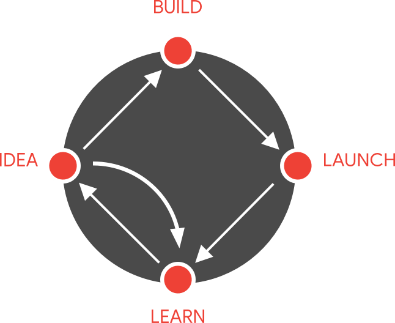
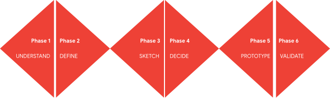

WHAT IS DESIGN SPRINT?
The Design Sprint is a proven methodology for solving problems through designing, prototyping, and testing ideas with users. Design Sprints quickly align teams under a shared vision with clearly defined goals and deliverables.
WHERE DOES IT COME FROM?
The Design Sprint methodology was developed at Google from a vision to grow UX culture and the practice of design leadership across the organization. Multiple teams within Google experimented with different methods from traditional UX practice, IDEO, the Stanford dSchool, business strategy, and even psychology, applying them to support divergent and convergent thinking with teams.and convergent thinking with teams.
DESIGN SPRINT METHODOLOGY
The Design Sprint follows six phases: Understand, Define, Sketch, Decide, Prototype, and Validate.
MONDAY
UNDERSTAND AND DEFINE
TUESDAY
SKETCH
WEDNESDAY
DECIDE
THURSDAY
PROTOTYPE
FRIDAY
VALIDATE
JAKE KNAPP
WHO CREATED DESIGN SPRINT
Jake spent 10 years at Google and Google Ventures, where he created the Design Sprint. He has since coached teams like Slack, Uber, 23andMe, LEGO, and The New York Times on the method.
WHO USE DESIGN SPRINT
Design Sprint has been run by companies like Nest, Flatiron Health, and Medium—to help them enter new markets, design new products, develop new features for millions of users, define marketing strategies, and much more.
CHINESE PROJECTS USING DESIGN SPRINT
OUR SPRINT MASTER
A Sprint Master is the lead of the team. This is the person who identifies the design challenge for the sprint, brings the team together and takes them through all sprint stages.
THOMAS YAO
FOUNDER OF VENTURE SPRINT

HUAN LI
CHIEF DESIGN SPRINT MASTER
GOOGLE CERTIFED DESIGN SPRINT MASTER
for free